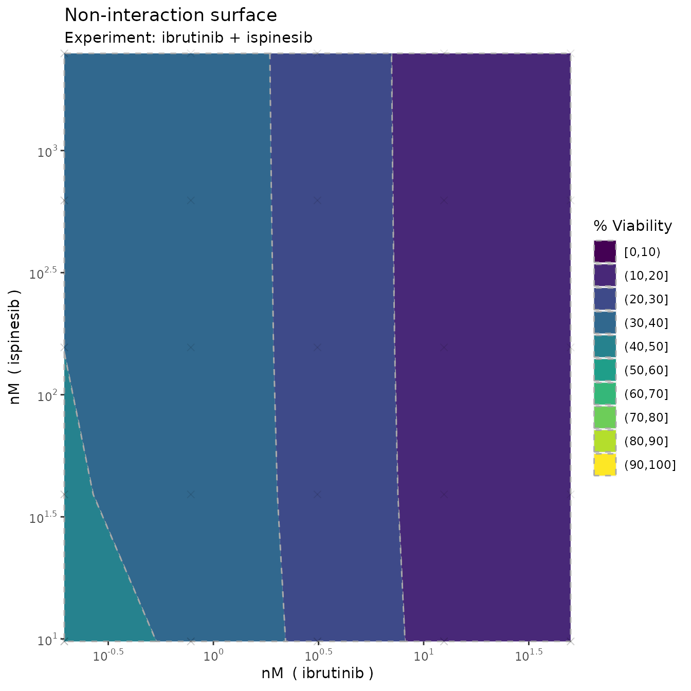
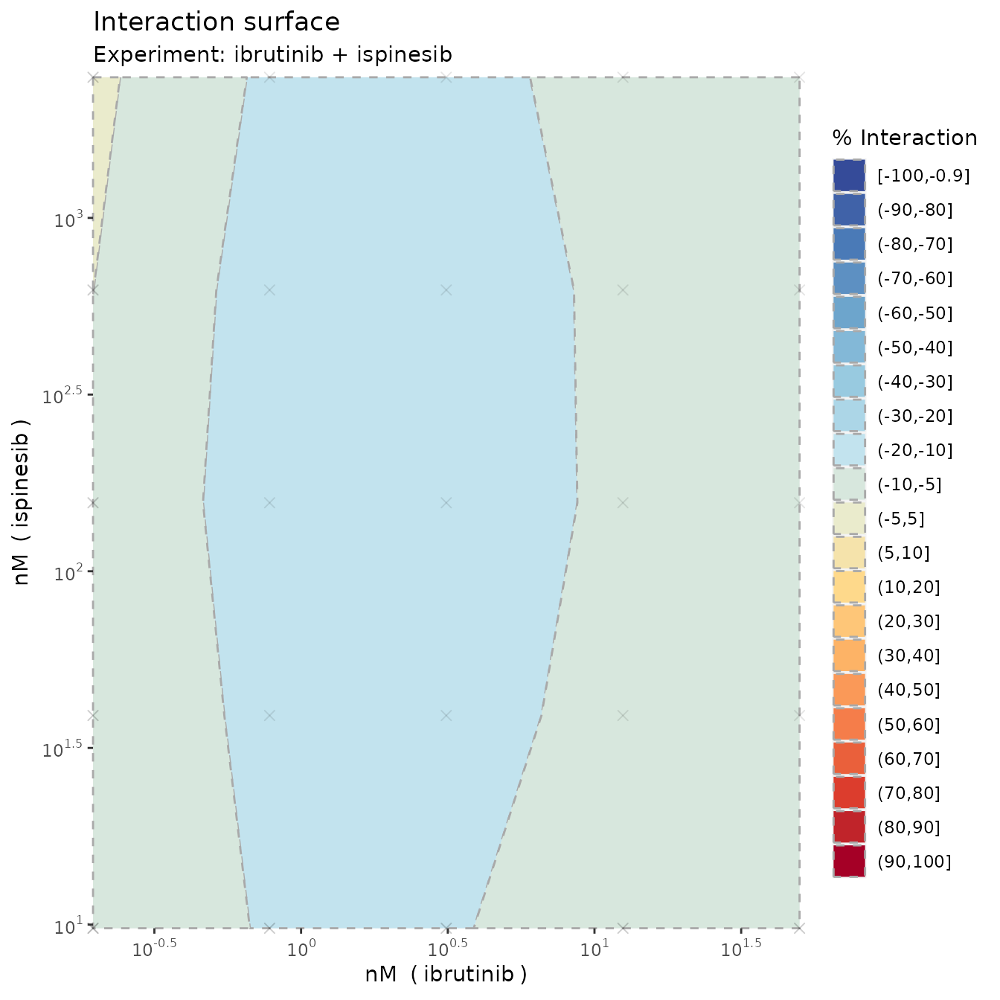
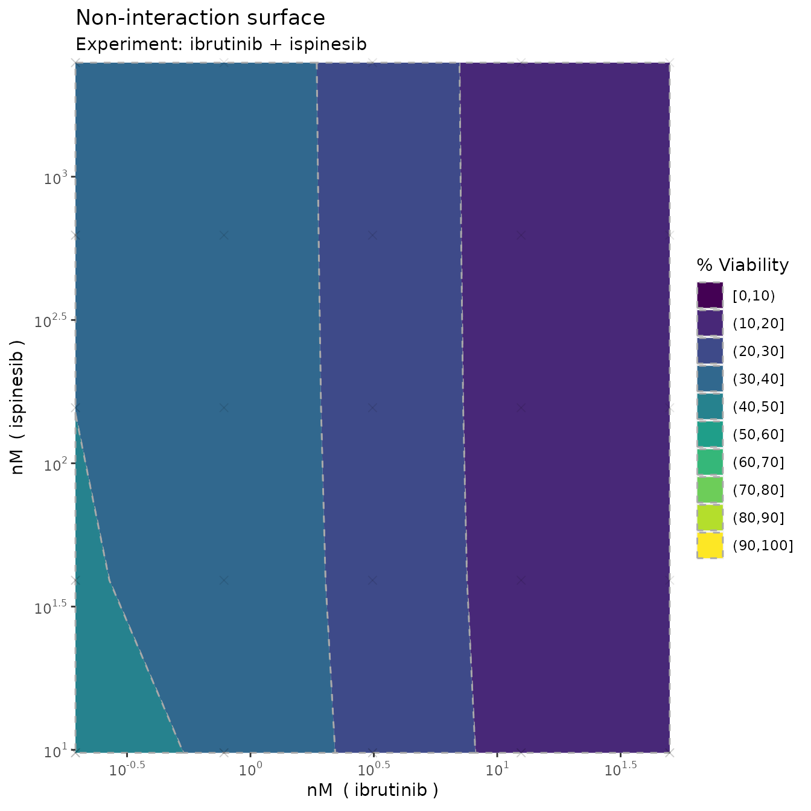
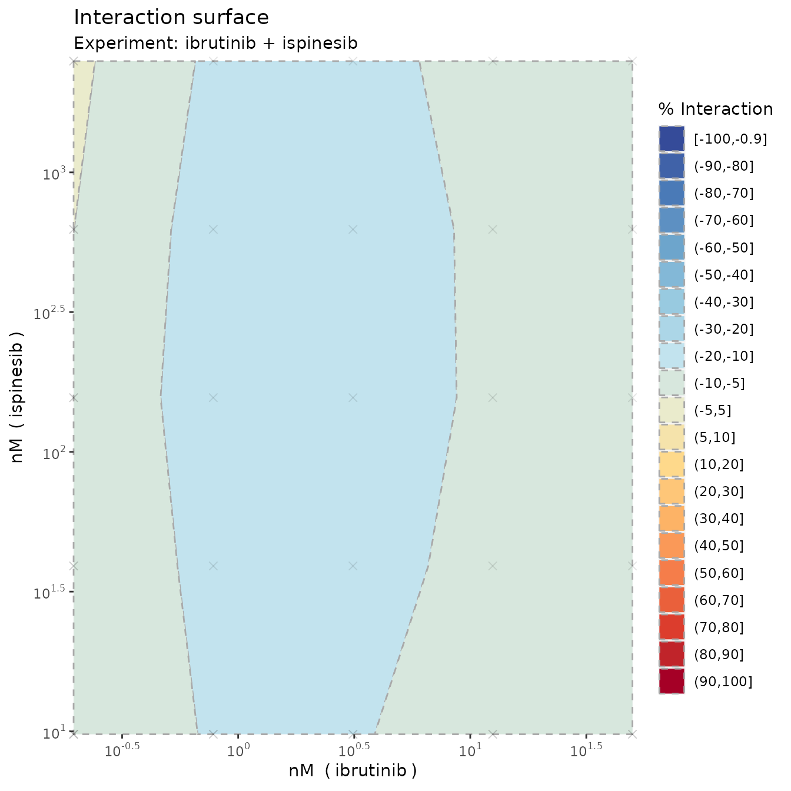

Single experiment example
Leiv Rønneberg
05/09/2022
Single_experiement.RmdIn the R package, we’ve attached two example datasets from a large drug combination screening experiment on diffuse large B-cell lymphoma. We’ll use these to show some simple use cases of the main functions and how to interpret the results.
Let’s load in the first example and have a look at it
library(bayesynergy)
data("mathews_DLBCL")
y = mathews_DLBCL[[1]][[1]]
x = mathews_DLBCL[[1]][[2]]
head(cbind(y,x))## Viability ibrutinib ispinesib
## [1,] 1.2295618 0.0000 0
## [2,] 1.0376006 0.1954 0
## [3,] 1.1813851 0.7812 0
## [4,] 0.5882688 3.1250 0
## [5,] 0.4666700 12.5000 0
## [6,] 0.2869514 50.0000 0We see that the the measured viability scores are stored in the
vector y, while x is a matrix with two columns
giving the corresponding concentrations where the viability scores were
read off.
Fitting the regression model is simple enough, and can be done on default settings simply by running the following code (where we add the names of the drugs involved, the concentration units for plotting purposes, and calculate the bayes factor).
fit = bayesynergy(y,x, drug_names = c("ibrutinib", "ispinesib"),
units = c("nM","nM"),bayes_factor = T)##
## SAMPLING FOR MODEL 'gp_grid' NOW (CHAIN 1).
## Chain 1:
## Chain 1: Gradient evaluation took 8.9e-05 seconds
## Chain 1: 1000 transitions using 10 leapfrog steps per transition would take 0.89 seconds.
## Chain 1: Adjust your expectations accordingly!
## Chain 1:
## Chain 1:
## Chain 1: Iteration: 1 / 2000 [ 0%] (Warmup)
## Chain 1: Iteration: 200 / 2000 [ 10%] (Warmup)
## Chain 1: Iteration: 400 / 2000 [ 20%] (Warmup)
## Chain 1: Iteration: 600 / 2000 [ 30%] (Warmup)
## Chain 1: Iteration: 800 / 2000 [ 40%] (Warmup)
## Chain 1: Iteration: 1000 / 2000 [ 50%] (Warmup)
## Chain 1: Iteration: 1001 / 2000 [ 50%] (Sampling)
## Chain 1: Iteration: 1200 / 2000 [ 60%] (Sampling)
## Chain 1: Iteration: 1400 / 2000 [ 70%] (Sampling)
## Chain 1: Iteration: 1600 / 2000 [ 80%] (Sampling)
## Chain 1: Iteration: 1800 / 2000 [ 90%] (Sampling)
## Chain 1: Iteration: 2000 / 2000 [100%] (Sampling)
## Chain 1:
## Chain 1: Elapsed Time: 2.81599 seconds (Warm-up)
## Chain 1: 2.44921 seconds (Sampling)
## Chain 1: 5.2652 seconds (Total)
## Chain 1:
##
## SAMPLING FOR MODEL 'gp_grid' NOW (CHAIN 2).
## Chain 2:
## Chain 2: Gradient evaluation took 6.7e-05 seconds
## Chain 2: 1000 transitions using 10 leapfrog steps per transition would take 0.67 seconds.
## Chain 2: Adjust your expectations accordingly!
## Chain 2:
## Chain 2:
## Chain 2: Iteration: 1 / 2000 [ 0%] (Warmup)
## Chain 2: Iteration: 200 / 2000 [ 10%] (Warmup)
## Chain 2: Iteration: 400 / 2000 [ 20%] (Warmup)
## Chain 2: Iteration: 600 / 2000 [ 30%] (Warmup)
## Chain 2: Iteration: 800 / 2000 [ 40%] (Warmup)
## Chain 2: Iteration: 1000 / 2000 [ 50%] (Warmup)
## Chain 2: Iteration: 1001 / 2000 [ 50%] (Sampling)
## Chain 2: Iteration: 1200 / 2000 [ 60%] (Sampling)
## Chain 2: Iteration: 1400 / 2000 [ 70%] (Sampling)
## Chain 2: Iteration: 1600 / 2000 [ 80%] (Sampling)
## Chain 2: Iteration: 1800 / 2000 [ 90%] (Sampling)
## Chain 2: Iteration: 2000 / 2000 [100%] (Sampling)
## Chain 2:
## Chain 2: Elapsed Time: 3.17015 seconds (Warm-up)
## Chain 2: 2.79801 seconds (Sampling)
## Chain 2: 5.96816 seconds (Total)
## Chain 2:
##
## SAMPLING FOR MODEL 'gp_grid' NOW (CHAIN 3).
## Chain 3:
## Chain 3: Gradient evaluation took 6e-05 seconds
## Chain 3: 1000 transitions using 10 leapfrog steps per transition would take 0.6 seconds.
## Chain 3: Adjust your expectations accordingly!
## Chain 3:
## Chain 3:
## Chain 3: Iteration: 1 / 2000 [ 0%] (Warmup)
## Chain 3: Iteration: 200 / 2000 [ 10%] (Warmup)
## Chain 3: Iteration: 400 / 2000 [ 20%] (Warmup)
## Chain 3: Iteration: 600 / 2000 [ 30%] (Warmup)
## Chain 3: Iteration: 800 / 2000 [ 40%] (Warmup)
## Chain 3: Iteration: 1000 / 2000 [ 50%] (Warmup)
## Chain 3: Iteration: 1001 / 2000 [ 50%] (Sampling)
## Chain 3: Iteration: 1200 / 2000 [ 60%] (Sampling)
## Chain 3: Iteration: 1400 / 2000 [ 70%] (Sampling)
## Chain 3: Iteration: 1600 / 2000 [ 80%] (Sampling)
## Chain 3: Iteration: 1800 / 2000 [ 90%] (Sampling)
## Chain 3: Iteration: 2000 / 2000 [100%] (Sampling)
## Chain 3:
## Chain 3: Elapsed Time: 2.6008 seconds (Warm-up)
## Chain 3: 1.45888 seconds (Sampling)
## Chain 3: 4.05968 seconds (Total)
## Chain 3:
##
## SAMPLING FOR MODEL 'gp_grid' NOW (CHAIN 4).
## Chain 4:
## Chain 4: Gradient evaluation took 6.1e-05 seconds
## Chain 4: 1000 transitions using 10 leapfrog steps per transition would take 0.61 seconds.
## Chain 4: Adjust your expectations accordingly!
## Chain 4:
## Chain 4:
## Chain 4: Iteration: 1 / 2000 [ 0%] (Warmup)
## Chain 4: Iteration: 200 / 2000 [ 10%] (Warmup)
## Chain 4: Iteration: 400 / 2000 [ 20%] (Warmup)
## Chain 4: Iteration: 600 / 2000 [ 30%] (Warmup)
## Chain 4: Iteration: 800 / 2000 [ 40%] (Warmup)
## Chain 4: Iteration: 1000 / 2000 [ 50%] (Warmup)
## Chain 4: Iteration: 1001 / 2000 [ 50%] (Sampling)
## Chain 4: Iteration: 1200 / 2000 [ 60%] (Sampling)
## Chain 4: Iteration: 1400 / 2000 [ 70%] (Sampling)
## Chain 4: Iteration: 1600 / 2000 [ 80%] (Sampling)
## Chain 4: Iteration: 1800 / 2000 [ 90%] (Sampling)
## Chain 4: Iteration: 2000 / 2000 [100%] (Sampling)
## Chain 4:
## Chain 4: Elapsed Time: 2.60968 seconds (Warm-up)
## Chain 4: 2.73077 seconds (Sampling)
## Chain 4: 5.34045 seconds (Total)
## Chain 4:
##
## SAMPLING FOR MODEL 'nointeraction' NOW (CHAIN 1).
## Chain 1:
## Chain 1: Gradient evaluation took 3.2e-05 seconds
## Chain 1: 1000 transitions using 10 leapfrog steps per transition would take 0.32 seconds.
## Chain 1: Adjust your expectations accordingly!
## Chain 1:
## Chain 1:
## Chain 1: Iteration: 1 / 2000 [ 0%] (Warmup)
## Chain 1: Iteration: 200 / 2000 [ 10%] (Warmup)
## Chain 1: Iteration: 400 / 2000 [ 20%] (Warmup)
## Chain 1: Iteration: 600 / 2000 [ 30%] (Warmup)
## Chain 1: Iteration: 800 / 2000 [ 40%] (Warmup)
## Chain 1: Iteration: 1000 / 2000 [ 50%] (Warmup)
## Chain 1: Iteration: 1001 / 2000 [ 50%] (Sampling)
## Chain 1: Iteration: 1200 / 2000 [ 60%] (Sampling)
## Chain 1: Iteration: 1400 / 2000 [ 70%] (Sampling)
## Chain 1: Iteration: 1600 / 2000 [ 80%] (Sampling)
## Chain 1: Iteration: 1800 / 2000 [ 90%] (Sampling)
## Chain 1: Iteration: 2000 / 2000 [100%] (Sampling)
## Chain 1:
## Chain 1: Elapsed Time: 0.385978 seconds (Warm-up)
## Chain 1: 0.397854 seconds (Sampling)
## Chain 1: 0.783832 seconds (Total)
## Chain 1:
##
## SAMPLING FOR MODEL 'nointeraction' NOW (CHAIN 2).
## Chain 2:
## Chain 2: Gradient evaluation took 3.1e-05 seconds
## Chain 2: 1000 transitions using 10 leapfrog steps per transition would take 0.31 seconds.
## Chain 2: Adjust your expectations accordingly!
## Chain 2:
## Chain 2:
## Chain 2: Iteration: 1 / 2000 [ 0%] (Warmup)
## Chain 2: Iteration: 200 / 2000 [ 10%] (Warmup)
## Chain 2: Iteration: 400 / 2000 [ 20%] (Warmup)
## Chain 2: Iteration: 600 / 2000 [ 30%] (Warmup)
## Chain 2: Iteration: 800 / 2000 [ 40%] (Warmup)
## Chain 2: Iteration: 1000 / 2000 [ 50%] (Warmup)
## Chain 2: Iteration: 1001 / 2000 [ 50%] (Sampling)
## Chain 2: Iteration: 1200 / 2000 [ 60%] (Sampling)
## Chain 2: Iteration: 1400 / 2000 [ 70%] (Sampling)
## Chain 2: Iteration: 1600 / 2000 [ 80%] (Sampling)
## Chain 2: Iteration: 1800 / 2000 [ 90%] (Sampling)
## Chain 2: Iteration: 2000 / 2000 [100%] (Sampling)
## Chain 2:
## Chain 2: Elapsed Time: 0.380922 seconds (Warm-up)
## Chain 2: 0.46838 seconds (Sampling)
## Chain 2: 0.849302 seconds (Total)
## Chain 2:
##
## SAMPLING FOR MODEL 'nointeraction' NOW (CHAIN 3).
## Chain 3:
## Chain 3: Gradient evaluation took 2.7e-05 seconds
## Chain 3: 1000 transitions using 10 leapfrog steps per transition would take 0.27 seconds.
## Chain 3: Adjust your expectations accordingly!
## Chain 3:
## Chain 3:
## Chain 3: Iteration: 1 / 2000 [ 0%] (Warmup)
## Chain 3: Iteration: 200 / 2000 [ 10%] (Warmup)
## Chain 3: Iteration: 400 / 2000 [ 20%] (Warmup)
## Chain 3: Iteration: 600 / 2000 [ 30%] (Warmup)
## Chain 3: Iteration: 800 / 2000 [ 40%] (Warmup)
## Chain 3: Iteration: 1000 / 2000 [ 50%] (Warmup)
## Chain 3: Iteration: 1001 / 2000 [ 50%] (Sampling)
## Chain 3: Iteration: 1200 / 2000 [ 60%] (Sampling)
## Chain 3: Iteration: 1400 / 2000 [ 70%] (Sampling)
## Chain 3: Iteration: 1600 / 2000 [ 80%] (Sampling)
## Chain 3: Iteration: 1800 / 2000 [ 90%] (Sampling)
## Chain 3: Iteration: 2000 / 2000 [100%] (Sampling)
## Chain 3:
## Chain 3: Elapsed Time: 0.375855 seconds (Warm-up)
## Chain 3: 0.262707 seconds (Sampling)
## Chain 3: 0.638562 seconds (Total)
## Chain 3:
##
## SAMPLING FOR MODEL 'nointeraction' NOW (CHAIN 4).
## Chain 4:
## Chain 4: Gradient evaluation took 2.7e-05 seconds
## Chain 4: 1000 transitions using 10 leapfrog steps per transition would take 0.27 seconds.
## Chain 4: Adjust your expectations accordingly!
## Chain 4:
## Chain 4:
## Chain 4: Iteration: 1 / 2000 [ 0%] (Warmup)
## Chain 4: Iteration: 200 / 2000 [ 10%] (Warmup)
## Chain 4: Iteration: 400 / 2000 [ 20%] (Warmup)
## Chain 4: Iteration: 600 / 2000 [ 30%] (Warmup)
## Chain 4: Iteration: 800 / 2000 [ 40%] (Warmup)
## Chain 4: Iteration: 1000 / 2000 [ 50%] (Warmup)
## Chain 4: Iteration: 1001 / 2000 [ 50%] (Sampling)
## Chain 4: Iteration: 1200 / 2000 [ 60%] (Sampling)
## Chain 4: Iteration: 1400 / 2000 [ 70%] (Sampling)
## Chain 4: Iteration: 1600 / 2000 [ 80%] (Sampling)
## Chain 4: Iteration: 1800 / 2000 [ 90%] (Sampling)
## Chain 4: Iteration: 2000 / 2000 [100%] (Sampling)
## Chain 4:
## Chain 4: Elapsed Time: 0.357029 seconds (Warm-up)
## Chain 4: 0.288034 seconds (Sampling)
## Chain 4: 0.645063 seconds (Total)
## Chain 4:## Calculating the Bayes factorThe resulting model can be summarised by running
summary(fit)## mean se_mean sd 2.5% 50% 97.5% n_eff Rhat
## la_1[1] 0.333 0.001906 0.0739 1.57e-01 0.342544 0.455 1503 1.002
## la_2[1] 0.383 0.005825 0.0725 8.65e-02 0.396226 0.458 155 1.035
## log10_ec50_1 0.480 0.003835 0.1554 2.37e-01 0.449817 0.853 1642 1.001
## log10_ec50_2 -1.020 0.020085 1.0150 -3.37e+00 -0.863765 0.482 2553 1.000
## slope_1 2.019 0.018573 0.9423 8.66e-01 1.798727 4.491 2574 1.001
## slope_2 1.436 0.029008 1.1037 8.27e-02 1.170444 4.310 1448 1.004
## ell 3.033 0.033651 1.5020 1.20e+00 2.706136 6.884 1992 1.002
## sigma_f 0.818 0.017180 0.7597 1.70e-01 0.599333 2.870 1955 1.002
## s 0.097 0.000294 0.0151 7.29e-02 0.095283 0.133 2656 1.001
## dss_1 33.564 0.044755 2.9239 2.76e+01 33.606938 39.198 4268 0.999
## dss_2 59.365 0.043703 2.8168 5.35e+01 59.492423 64.756 4154 1.001
## rVUS_f 82.764 0.014043 0.8604 8.10e+01 82.794423 84.362 3753 1.000
## rVUS_p0 73.021 0.034433 2.2560 6.83e+01 73.136500 77.189 4293 1.000
## VUS_Delta -9.743 0.036431 2.4252 -1.48e+01 -9.643862 -5.248 4431 1.000
## VUS_syn -9.789 0.035706 2.3844 -1.48e+01 -9.676531 -5.392 4459 1.000
## VUS_ant 0.046 0.002126 0.1150 4.63e-06 0.000083 0.387 2925 1.000
##
## log-Pseudo Marginal Likelihood (LPML) = 52.59813
## Estimated Bayes factor in favor of full model over non-interaction only model: 31.33529which gives posterior summaries of the parameters of the model.
In addition, the model calculates summary statistics of the
monotherapy curves and the dose-response surface including drug
sensitivity scores (DSS) for the two drugs in question, as well as the
volumes that capture the notion of efficacy (rVUS_f),
interaction (VUS_Delta), synergy (VUS_syn) and
interaction (VUS_ant).
As indicated, the total combined drug efficacy is around 80%
(rVUS_f), of which around 70 percentage points can be
attributed to \(p_0\)
(rVUS_p0), leaving room for 10 percentage points worth of
synergy (VUS_syn). We can also note that the model is
fairly certain of this effect, with a 95% credible interval given as
(-14.82, -5.392). The certainty of this is also verified by the Bayes
factor, which at 31.34 indicates strong evidence of an interaction
effect present in the model.
Visualization
Monotherapy curves, 2D contour plots
We can also create plots by simply running
plot(fit, plot3D = F)

 

which produces monotherapy curves, monotherapy summary statistics, 2D contour plots of the dose-response function \(f\), the non-interaction assumption \(p_0\) and the interaction \(\Delta\). The last plot displays the \(rVUS\) scores as discussed previously, with corresponding uncertainty.